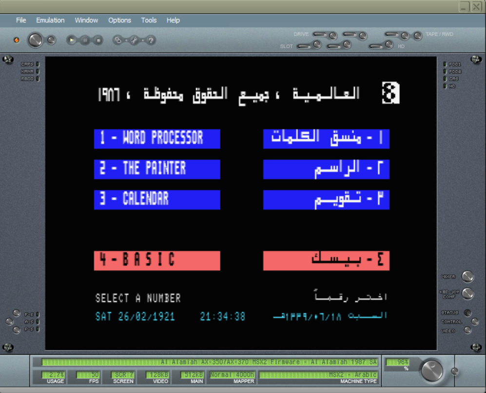

ذكريات من صخر

إذا كان “مستوى النوستالجيا” لديك قد ارتفع عند رؤية هذه الصورة فتحية لك، وحتى لو لم تحدث لك أي تغييرات جسدية فتحية لك أيضًا!
هذه الصورة كفيلة بفتح شلال حنين إلى «الزمن الجميل» لمن يتعرف عليها. لكن ألق نظرة أخرى إلى هذه الصور أيضًا لتتدفق لديك شلالات الحنين تدفقًا (مبالغة).
هذه الصور من «برامج الأسرة»؛ مجموعة برامج نزلت حوالي سنة 1998 م. أُنتجت هذه البرامج من قبل شركة البرمجيات العربية صخر.
برامج الأسرة هي حزمة برامج يمكن الوصول إليها من خلال واجهة مبسطة بديلة للنظام الأساسي على شكل غرفة. لمعظم هذه البرامج طابع تعليمي، وقد شكلت أدفئ ذكريات الطفولة لدى الكثيرين، منهم أنا:
«لعبة الغواصة»، «اختبر معلوماتك»، «كلمات ومعاني»، والمضيف على شكل حاسوب الذي يرحب بك في بداية البرنامج ويرشدك…
مع أنني لست من جيل التسعينيات حتى، إلا أنني كنت محظوظًا لكي أجرب برامج الأسرة في طفولتي. ما زلت أذكر كيف كنت أذهب إلى خالتي لألعب ألعاب برامج الأسرة على حاسوبها، والذي كان يشغل نظام Windows Me إذا كنت أذكر جيدًا.
قادني مؤخرًا بحثي المتواصل في الإنترنت (أو التصفح المشتت أو “البحبشة” بمعنى أدق) لاسترجاع ذكريات برامج الأسرة، فذهبت أنقب عن رابط تنزيل بطبيعة الحال ووجدته بسرعة1. كان هذا الجزء السهل، لنأتي الآن للجزء المثير للاهتمام:
البرامج نزلت لنظام ويندوز 95 غالبًا وقد لا تعمل على الأنظمة الحديثة مثل ويندوز 10. نسخة البرامج التي حملتها تحتوي على برنامج محاكاة ونسخة كاملة من ويندوز 95. اشتغل البرنامج وظهرت الواجهة لكن لم تعمل الفأرة لسبب أجهله (ربما مشكلة في المحاكي). على كل حال، وجدت الحل الخنفشاري المعقد وهو تنزيل نسخة ويندوز 95 من الإنترنت وتشغيلها ببرنامج محاكاة مجرب مثل VirtualBox. بعد معاناة وسهر طويلين ومشاكل تقنية عدة (التفاصيل المثيرة في الأسفل) واجهتها خلال تنصيب نظام ديناصوري مثل ويندوز 95 -حتى لو كان على نظام محاكاة-، تمكنت أخيرًا من تشغيل البرنامج، وانفتح صدري بسماع المضيف يرحب بي… لعبت ألعابي المفضلة قليلًا واسترجعت معها ذكريات لطيفة.
ثم تذكرت أنني منذ ما يقل عن سنتين نزلت برامج الأسرة بالفعل واستطعت تشغيلها بدون صعوبة كثيرة، لكني لم استخدمها كثيرًا…
عندما فكرت لمَ لم أواجه مثل هذه الصعوبات سابقًا تذكرت أن برامج الأسرة يمكن أن تعمل بالفعل على الأنظمة الحديثة، لكن لكونها برامج 16 بت فهي لا تعمل على أنظمة ال64 بت إلا باللجوء إلى طرق وتنزيل برامج. ممكن أن تعمل على أنظمة 32 بت بدون مشاكل، وكان من الممكن أن أنصب نظامًا نزل في القرن الحالي مثل الأسطورة إكس بي بدل العودة إلى الماضي البعيد…
نزلت نظام إكس بي 32 بت ونصبته في VirtualBox وحاولت تشغيل البرامج فيه للتسلية فقط، وبالفعل كانت عملية سلسلة وسهلة.
على كل حال، كان دافع هذه المغامرة بشكل رئيسي هو الفضول المحض وحب الاستكشاف. وبالحديث عن الاستكشاف، فقد قادتني برامج الأسرة لأن أقفز down the rabbit hole كما يقول المثل الإنكليزي، وأبحث عن شركة الصخر وتاريخها.
هنا نأتي لمنتج آخر مهم جدًا لشركة صخر، وهو حاسوب صخر. لم أكن أعمل بوجود هذا المخلوق من قبل وتعرفت عليه منذ أيام فقط. طبعت شعرت بالحسرة لأنني لم أحظَ بفرصة تكوين ذكريات طفولة معه :) لكني لم أكن من جيله ولم يكن متوفرًا في موطني أصلًا…
كان حاسوب صخر مشروعًا مشتركًا لصخر مع شركة ياماها اليابانية في أوائل ثمانينيات القرن العشرين، وهو مبني على معمارية MSX المؤسسة من قبل مايكروسوفت، والتي نتج عنها حواسيب كثيرة كانت رائجة في مناطق مختلفة حول العالم لكنها سرعان ما أصبحت صفحة من التاريخ في التسعينات، وذهب معها حاسوب صخر…
خلف حاسوب صخر أيضًا ذكريات ربما تكون أكبر من ذكريات برامج الأسرة عند الكثيرين. حتى ولو لم أكن محظوظًا بما فيه الكفاية لرؤية الحاسوب وجهًا لوجه، رغبت على كل حال في إيجاد طريقة لتشغيل برامجه. فكرت بخيارين:
- الأول هو اختراع/إيجاد آلة زمن والسفر عبرها إلى عصر صخر.
- إيجاد برنامج محاكاة.
غني عن الذكر أنني طبقت الخيار الثاني، ليس لأنني أفضله، لكن رضوخًا للواقع.
وبالفعل، لم أواجه صعوبة في إيجاد برنامج محاكاة وتشغيل برامج صخر بسهولة فاقت سهولة تشغيل برامج الأسرة2.
لم أجرب كثيرًا من برامجه حتى الآن، حيث لفت نظري شيء في واجهة البداية جعلني أنسى تجريب البرامج…

ما الملفت للنظر في هذه الصورة؟
دقق في التواريخ…
التاريخ الميلادي يطابق التاريخ الفعلي حينما التقطت هذه الصورة ما عدا أن السنة هي 1921 وليس 2021 كما هو واضح.
حالما رأيت هذا خطرت في بالي مشكلة معروفة جدًا لمن له بعض الخبرة بالبرمجة، وهي ما يسمى بمشكلة عام 2000 (Year 2000 problem أو Y2K اختصارًا).
المشكلة باختصار هي أن كثيرًا من البرامج في القرن الماضي اعتادت تخزين آخر منزلتين من السنة فقط لتوفير المساحة لأن كل بت كان ثمينًا في ذلك الوقت.
اعتمد البرمجون على افتراض أن أول منزلتين هما دومًا 19 وعرضوا السنة كاملة في واجهات المستخدم بإضافة 19 ببساطة. ربما لم يفكروا أن برامجهم ستبقى على قيد الحياة في القرن الواحد والعشرين.
نسبة الخطأ في التاريخ الهجري هي 102 سنة وشهر تقريبًا. هنا أيضًا تظهر مشكلة عام 2000، لكن قد يكون هذا متوقعًا، حيث إن مصدر التاريخين واحد، وهو ساعة النظام الداخلية المخزنة كمنزلتين فقط.
بخصوص السنتين الباقيتين، فهي لأن مقابل سنة 1921 في التقويم الهجري هي سنة 1339 فعلًا، والنظام يحسب السنة الهجرية بافتراض أنه في القرن العشرين، لذلك فالمشكلة واحدة، وهي مشكلة عام 2000 كما تقدم.
خُيِّل لي وأنا أبحث عن هذا الموضوع أننا لو أعدنا التاريخ إلى سنة 1980 م مثلًا (والتي تقابلها سنة 1406 ه)، أن البرنامج سيعرض السنة الهجرية كـ 1306!
طبعًا كنت مخطئًا، فالبرنامج ذكي كفاية ليعرض 13 أو 14 حسب الوقت الفعلي (بالنسبة للقرن الماضي على الأقل).
دفعتني “غريزتي النيردية” (أو التخريبية) لأن أبحث عن حيلة أخدع بها البرنامج ليظن أنه في زمن مختلف، مثل زمن نزوله (1986 م تقريبًا) لكي أنظر كيف سيتصرف ويعرض التواريخ حسب تواريخ فعلية مختلفة.
ليس هناك آلة زمن للأسف، لكن بالطبع هناك برنامج لمحاكاة ذلك! إنه RunAsDate من مجموعة برامج NirSoft الأسطورية!
هنا أطلقت العنان لنفسي وبدأت أجرب تواريخ مختلفة، وخرجت بنتائج بعضها متوقع وبعضها الآخر ما زال مبهمًا بالنسبة لي.
أولًا، بدأت أختبر ما إذا كانت ساعة النظام الداخلية مخزنة حسب ما يسمى توقيت يونكس (Unix time)، والذي يعني عدد الثواني منذ سنة 1970 م. هذا النظام مستخدم في كثير من أنظمة يونكس الحديثة وغيرها.
خرجت النتيجة سلبية، حيث عرض البرنامج سنة 1970 كـ 1937! وبدأت ألغاز جديدة…
رحت أجرب تواريخ أخرى قبل سنة 1970 وبعدها خرجت إلى أن التاريخ مخزن حسب سنة 1980، لكن لا يبدو أن السنوات قبل هذه السنة يمكن تمثيلها بشكل صحيح في الحاسوب حسبما ظهر بعد تجربة سنة 1970 وسنوات أخرى عديدة، وهذه صحيح حتى لسنوات مستقبلية بعد 1980: سنة 2107 مثلًا تُعرض كـ 1930!
وبعض الفواصل الزمنية سواء الماضية أم المستقبلية يرفض البرنامج العمل بها إطلاقًا! (جرب سنة 2039 م)
هذه بعض التواريخ التي جربتها بهدف استخراج نمط مفهوم:
| التاريخ الفعلي | تاريخ البرنامج |
|---|---|
| 2280 | 1907 |
| 2180 | لا يعمل |
| 2110 | 1929 |
| 2109 | 1928 |
| 2108 | 1927 |
| 2107 | 1930 |
| 2039 <= x <= 2106 | لا يعمل |
| 2038 | 1938 |
| 2037 | 1937 |
| 1995 | 1995 |
| 1980 | 1980 |
| 1979 | 1945 |
| 1970 | 1937 |
| 1960 | 1927 |
| 1950 | 1917 |
| 1940 | 1907 |
| 1933 | 1900 |
| 1932 | 1999 |
| 1931 | 1998 |
| 1930 | 1997 |
| 1920 | 1987 |
| 1916 | 1983 |
| 1915 | 1982 |
| 1913 | 1980 |
| 1912 | 1945 |
| 1910 | 1943 |
| 1905 | 1928 |
| 1903 | 1930 |
| 1902 | لا يعمل |
| 1853 | لا يعمل |
كنت أتوقع أن أرى أشياء معتادة مثل overflow حين يبلغ الرقم حدًا معينًا، لكن ما رأيته هو أن رفع العدد بقيمة واحد قد يأتي بتغيرات غريبة كما ترون في التغير بين سنة 2107 وسنة 2108.
ذهبت بعدها أقرأ على الشبكة حول معمارية حاسوب صخر، خصوصًا كيف يخزن التاريخ، وخرجت بهذه المقالة المفيدة حول ما أظن أنه العداد نفسه المستخدم في حاسوب صخر:
https://www.msx.org/wiki/Clock_chip_/_RP-5C01
المقالة تقول إن السنة مخزنة في بايت واحدة، 4 بتات لكل منزلة من المنزلتين. لكن ما زال سلوك البرنامج غير مفهوم بالنسبة لي.
جربت تعديل قيمة السِجِل (register) الذي تخزن السنة فيه يدويًا من خلال المحاكي. محاكي blueMSX يوفر debugger لتتبع سلوك الحاسوب وتعديل كل شيء تقريبًا، لكنني لم أتمكن من معرفة موقع السجل الذي يجب تعديله.
على كل حال، كانت هذه طريقة مطولة لأقول إنني فشلت… ربما أعود لحل هذا اللغز يومًا ما.
بعض العقول خلف صخر
أثناء بحثي في تاريخ الصخر -والذي لم أجد عنه الكثير للأسف- تعرفت بطبيعة الحال على أبرز الوجوه خلف مشروع صخر:
- محمد الشارخ: مؤسس الشركة.
- نبيل علي: عالم حاسوب ومفكر.
النقطة المشتركة الكبرى بينهما هي إيمانهما بضرورة تطوير اللغة العربية وأدوات لمعالجتها مواكبة لعصر المعلوماتية. وبالنظر إلى برامج صخر المتعلقة باللغة العربية، يمكنك القول بكل سهولة إن رؤيتهما نجحت وأنتجت أدوات مثل أول برنامج قرآن كريم وأدوات معالجة لغوية متقدمة.3
إذن أين صخر الآن؟ الشركة ما زالت حية وتنتج أدوات عالية الجودة متعلقة باللغة العربية، لكن يبدو أن جل تركيزها اتجه إلى تسويق منتجاتها للعملاء الأجانب.
إلا أن للشركة مشاريع موجهة للعرب، مثل أرشيف المجلات الأدبية والثقافية، ومشروع المعجم العربي المعاصر، ومشاريع أخرى. مشروع المعجم خصوصًا أثار اهتمامي جدًا لأنني أعتقد أننا في حاجة لمثل هذه المشاريع، وأعجبني أنه فعلًا معجم معاصر، حيث يوفر واجهة إلكترونية سهلة الاستخدام مع ميزات مثل البحث عن أمثلة لاستخدام الكلمات والمترادفات والمتضادات والتراكيب. أرى هذه الميزات في أغلب المعاجم الإنجليزية المشهورة على الشبكة ويسرني توفرها في معجم عربي.
خاتمة
كان هذا سردًا لمغامرتي مع صخر من جديد. أعرف أنها مقالة مملة مليئة بالتفاصيل التقنية، لكن قدراتي الأدبية ضعيفة.
على كل حال، سأنشر صورًا وتعليقات حول مختلف برامج صخر أثناء تجربتها وأنشرها في مقالة منفصلة باسم معرض صخر.
-
رابط تحميل مجموعة برامج الأسرة: https://www.aboharon.com/2017/04/windows-95-arabic.html ↩
-
رابط تحميل برامج حاسوب صخر: https://www.mediafire.com/file/uh9rln79hk7kfwq/msx.rar/file ↩